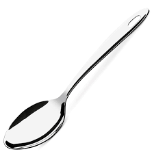

As colheres
Fonte : www.pinterest.com
A origem das colheres
A colher é um dos utensílios de cozinha mais antigo já datado,mais novo que a faca e mais velho que o garfo esse utensílio é um dos mais tradicionais talheres de mesa.
As primeiras colheres provavelmente eram feitas com objetos naturais como conchas de animais, cascas de frutas ou pedaços de plantas,quando as colheres começaram a ganhar o formato semelhante ao que temos hoje os matériais utilizado foram os mais diversos como: madeira,metal,prata.
O uso da colher é indispensável em qualquer cozinha e conhecer os seus diversos modelos, a utilização adequada de cada um e também a sua história trará diversos benefícios a sua vida.
Vamos conhecer agora 7 tipos de colheres e suas funções :
Colher de café
Fonte:www.rebalcomercial.com.br
Essa é a menor das colheres existentes, utilizada para adoçar café nas pequenas xícaras em que ele é tomado.
Colher de chá
Fonte:www.pinheirense.com.br
Um pouco maior que a colher de café,esse talher é muito utilizado para tomar chá e também outros líquidos.
Colher de sobremesa
Fonte:www.rebalcomercial.com.br
Utilizada na hora de servir a sobremesa,esse talher é um pouco maior que a colher de chá, e um pouco menor que a colher de sopa.
Colher de sopa
Fonte:www.lauxlocacoes.com.br
Com certeza essa é a colher mais conhecida e utilizada, de tamanho médio é destinada ao consumo de sopas,cremes,líquidos e principalmente no almoço e na janta.
Colher de sorvete
Fonte:www.hidronox.com.br
Essa colher diferente das apresentadas anteriormente não é tão presente nas cozinhas comuns, utilizadas normalmente em sorveterias a função desse talher é retirar o sorvete do recipiente no qual se encontra formando uma bola.
Colher de servir
Fonte:www.magazine.com.br
Como o próprio nome sugere, a utilizada dessa colher é servir alimentos na mesa como arroz,salada,carnes,massas,etc. Esse modelo de colher é bem grande,o maior talher dessa lista sua medida equivale a duas colheres de sopa.
Colher de pau
Fonte:www.amazon.com.br
Essa é uma colher grande utilizada para mexer em caldos como sopas, o que mais chama a atenção nesse utensílio é o material utilizado em sua fabricação que é a madeira.